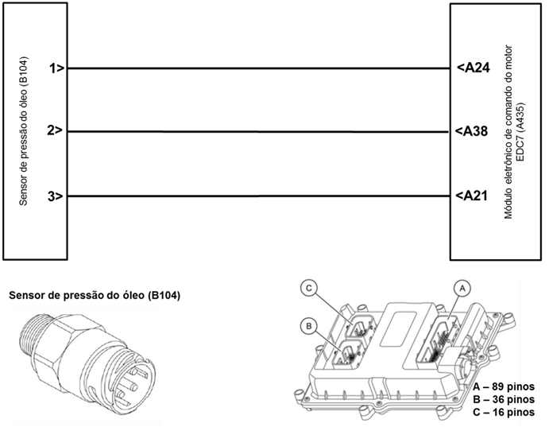

|

Descrição da Falha
Circuito do sensor
de pressão do óleo, sinal defeituoso.
Indicação de Falha
Falha não é indicada no cluster, pode ser visualizada somente através da MCO-08.
Estratégia de Monitoramento
O
módulo EDC7 monitora o incremento do valor de correção para calibração,
se o tamanho do valor de incremento exceder o limite de tolerância o
sensor é considerado defeituoso.
Efeito da Falha
Com o motor parado a MCO-08 mostrará a pressão de óleo acima de 0 bar.
Possíveis Falhas
FMI 8: Sinal defeituoso. Sensor com defeito.
Aviso
  O condutor não será informado da falha, ela só poderá ser acessada através da ferramenta de diagnóstico MCO-08. O condutor não será informado da falha, ela só poderá ser acessada através da ferramenta de diagnóstico MCO-08.
Registros de Falhas em Outros
Módulos de Comando
Não.
Considerar os esquemas
elétricos do veículo
| Verificação
|
Medição |
Eliminação da
Falha |
Sonda lambda
|
- |
– Substituir a sonda lambda
|
|